Oceânica Flagship · estudos de direção criativa
Etapa seguinte (Prompt 02): três tratamentos cinematográficos da Rota A, com animatics →
Vídeo institucional: shot list de 85 planos → · animatic da hero com imagens reais · reavaliação
Dois vídeos: shot list consolidada → · animatic da Rota A v3 · recomendação visual
Hero V4 · Director's Cut → · notas do diretor · blueprint de scroll
Fase 1 e 2 do Master Brief. Três rotas para a abertura, cada uma com três quadros de storyboard e um estudo mobile. Aguardando a escolha de uma rota.
Os quadros são estudos de composição feitos com fotografias do site oficial, ainda não liberadas para publicação. Não são arte final nem registro de uma operação específica. Nenhum crédito de geração de imagem foi usado.
Rota A · Porte
"Engenharia de grande porte." O casco não cabe na tela; a câmera recua e cada recuo multiplica a escala. Recomendada.

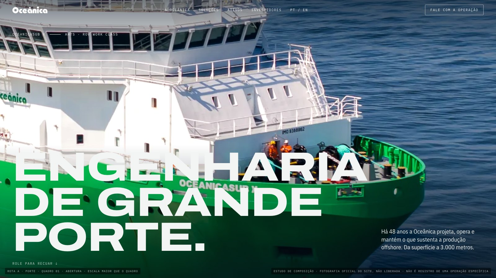

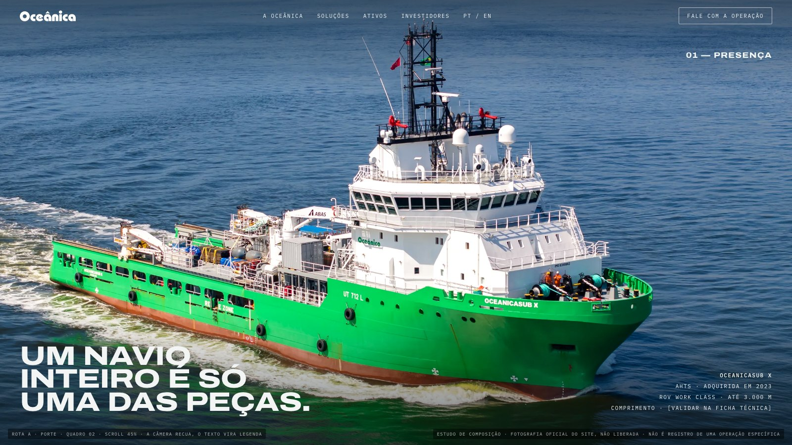

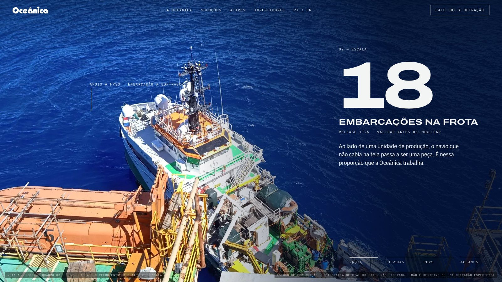

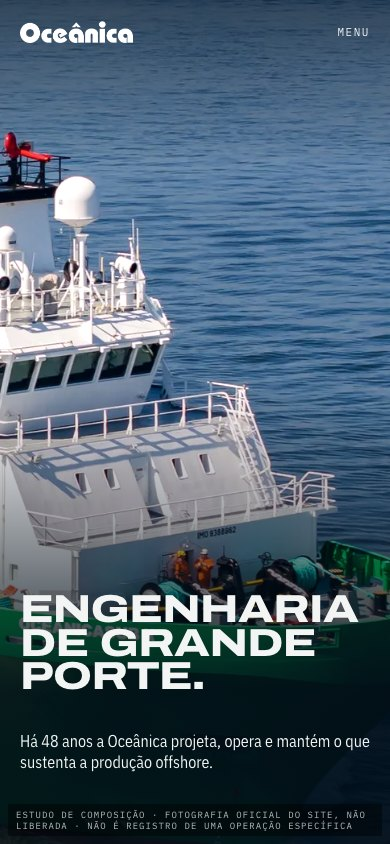
Rota B · Cota Zero
"A operação continua abaixo da linha." A linha d'água como cota de desenho técnico; a coluna em escala real.

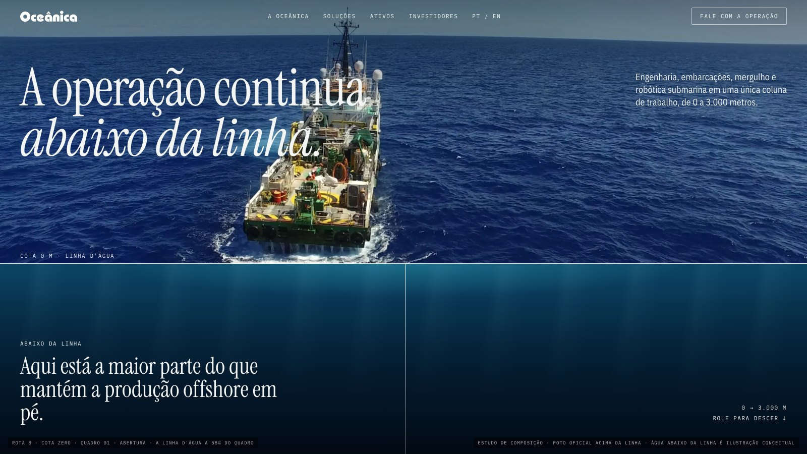

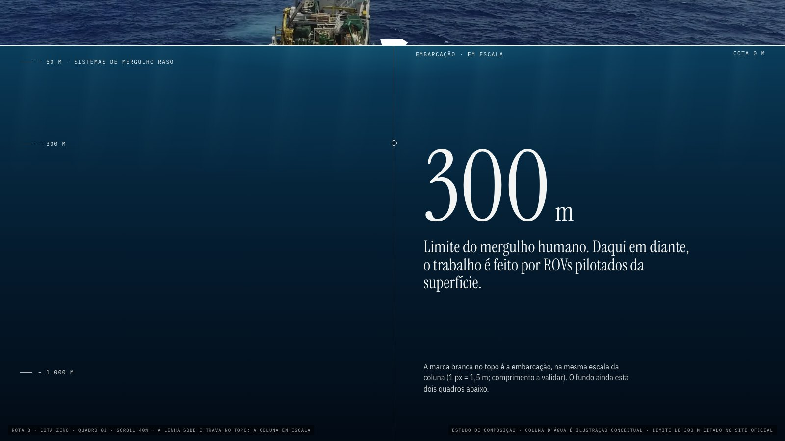

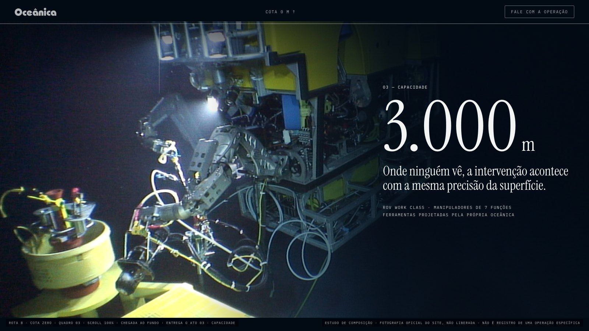

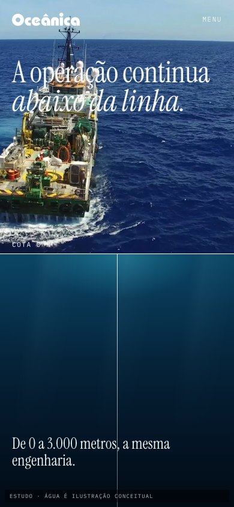
Rota C · Uma Só Operação
"Tudo isto é uma só operação." Um instante, várias frentes, uma linha que liga todas e vira a navegação do Universe.

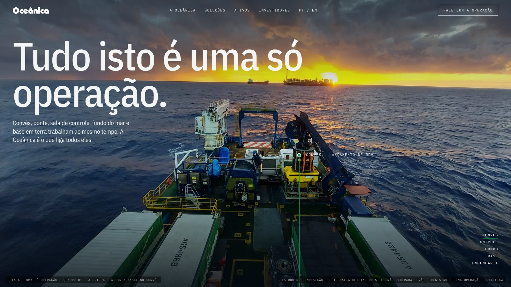

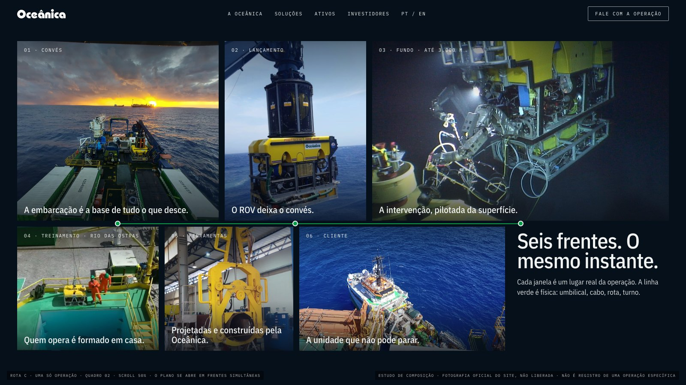

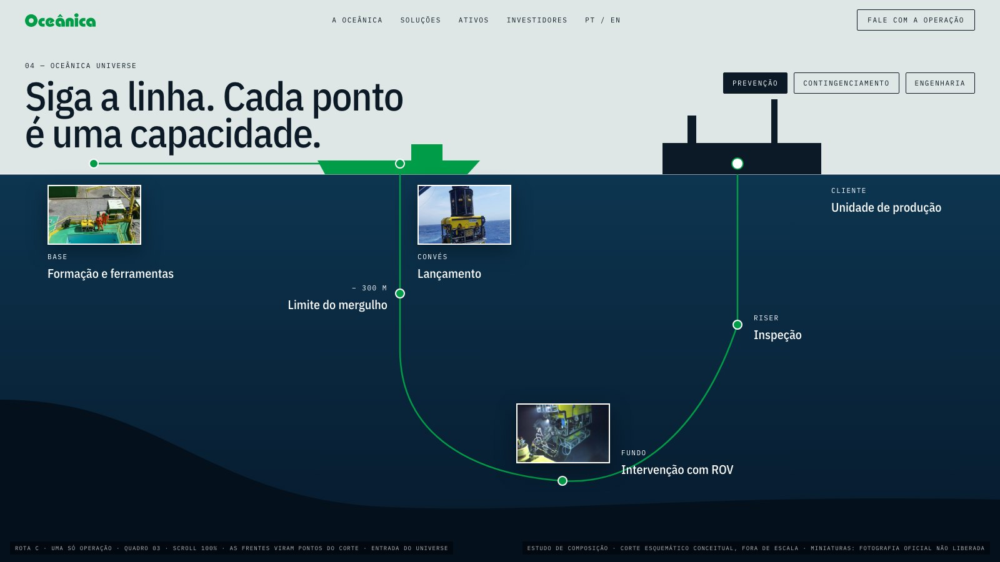

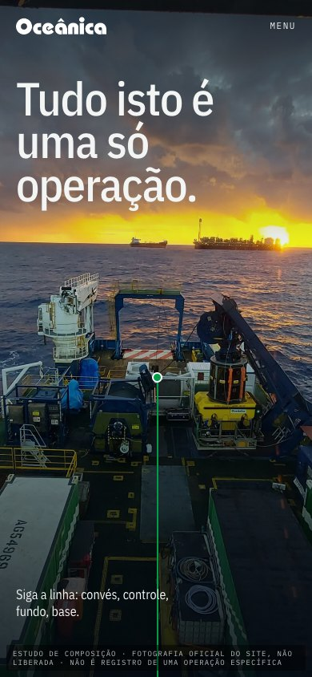
Referências observadas em 16/11/2026
Capturas de tela de sites de terceiros, só para estudo interno. Nada delas é reutilizado.
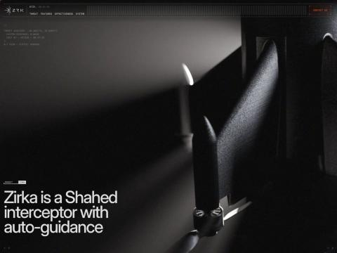
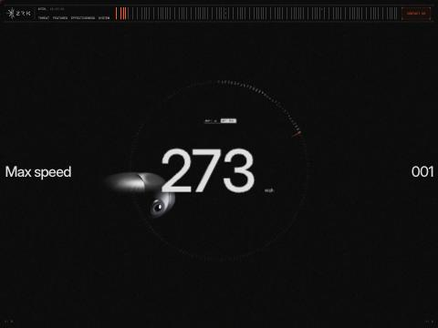
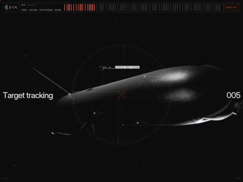
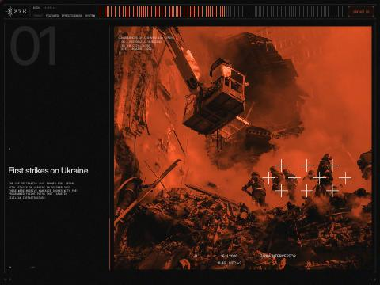
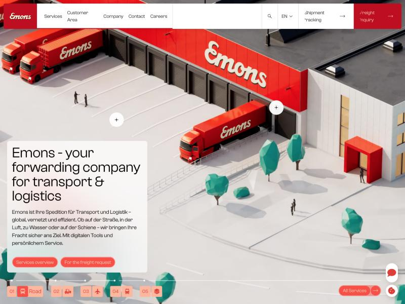
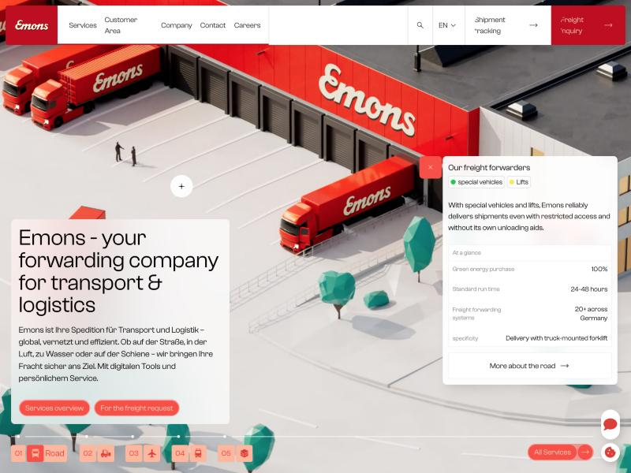
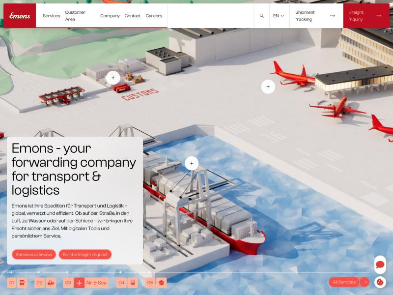
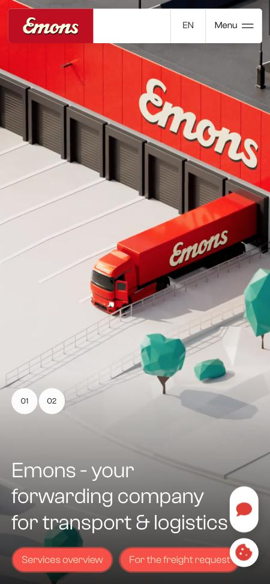